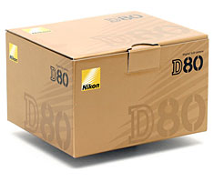

Nikon D80
August 9, 2006 | Comments (0)

Ok, no surprises for today. The Nikon D80 is announced as expected. Unfortunately the teaser on nikonimaging.com did not change to something spectacular when it hit the ‘zero’ days. My price guestimate was probably a little bit optimistic also. On Kamera Express it is advertised as € 1299,—€ 1099,—
UPDATED: Some links:
- D80 brochure (pdf)
- DP Review Nikon D80 hands on preview
- Let’s go Digital Nikon D80 preview
- Rob Galbraith: Nikon announces D80
- Nikon D80 ISO 1600 sample images on web magazine/Japan compared with Sony A100
And a real person handling the camera:
Update 2: This camera seems also a winner for the Pixel peepers! noise at 1600 is excellent. Have a look at the test charts at www.imaging-resource.com for both the Canon 400D and Nikon D80
“Those are my principles. If you don't like them I have others.” — Groucho Marx (1895-1977)
Copyright © 2003-2007 Janco Tanis. All rights reserved.
XHTML, CSS, RSS feeds. Powered by Movable Type. Hosted @Home with a domain by hostway.
XHTML, CSS, RSS feeds. Powered by Movable Type. Hosted @Home with a domain by hostway.
Comments
Okay. So, I was wrong. It's a D80. But, I still really think of it as a D60.
That's a nice picture of the Nikon D80 box :-) reminds me of this funny piece written by John Michael Cooper - wonder if you'd read it?
I'm looking forward to tips and images being submitted by Nikon D80 owners in the coming months, and I'll be linking up to interesting stuff at :> NikonD80Links.com
Thanks!